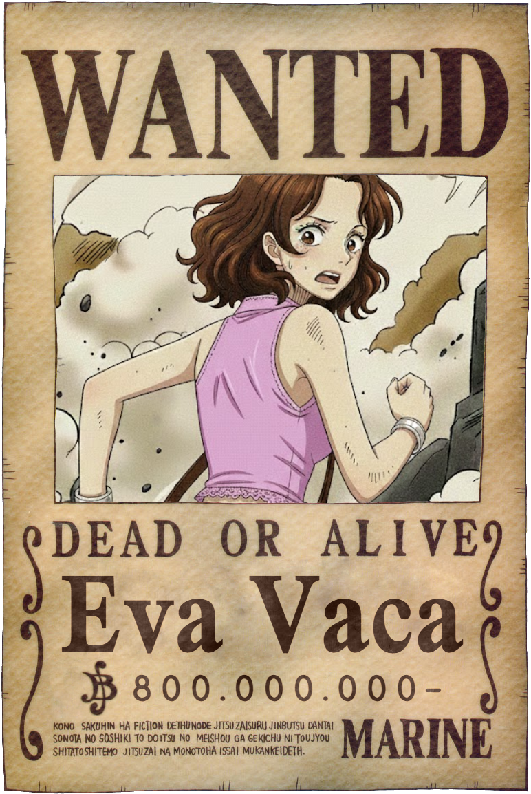
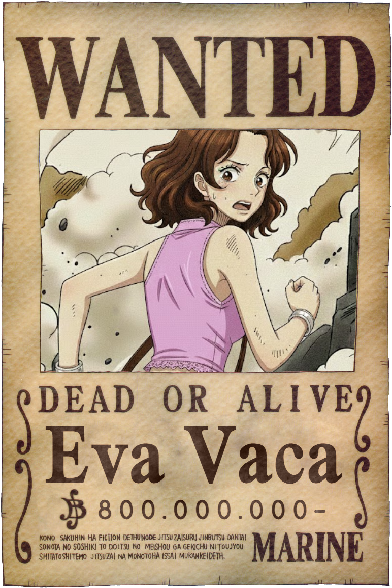
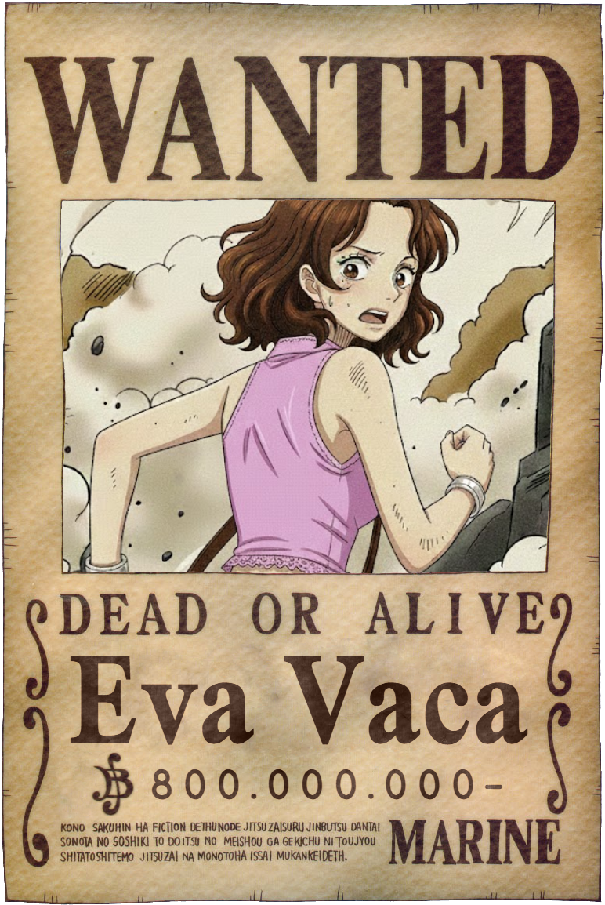

👑 ¡EL ONE PIECE ES REAL! 👑
 

¡FELICES 8 MESES, MI NAKAMA!
Ronaldo, eres mi tesoro más grande en todo el Grand Line.
Hace 8 meses zarpamos en esta aventura...
Haz clic en el barco para levar anclas
Hemos superado tormentas y enemigos juntos.
¡Derrota las dudas de la Marina!
¡Golpea para avanzar!
Estamos muy cerca del One Piece...
Solo un verdadero nakama puede abrir este cofre.
Haz clic para abrir el cofre final

Ronaldo, eres mi tesoro más grande en todo el Grand Line.